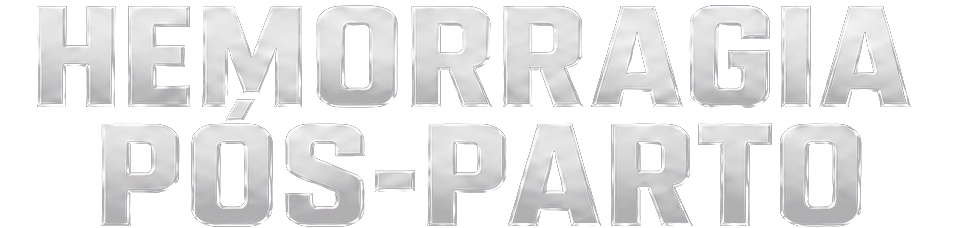

Sua conduta em hemorragia pós-parto,
pronta para aplicar
no plantão.
Do reconhecimento à decisão cirúrgica, domine em 8 horas uma sequência clara para agir — mesmo que hoje você trave no momento mais crítico.
27 de setembro, domingo09h00 às 17h00 • Ao vivo
Lote 0145% dos ingressos vendidos